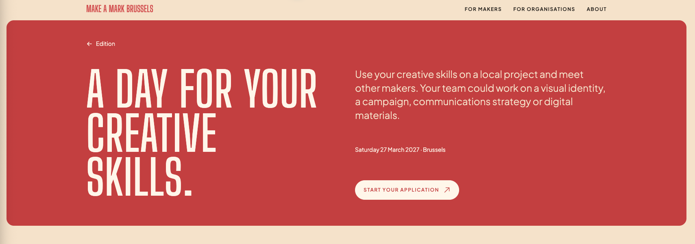

Arrange the hero around the invitation.
Two decisions are in play: whether the standalone “Edition” link still earns space beside the linked wordmark, and where the event date helps the maker understand the invitation. These are review options; the live page is unchanged.
The current composition
Left: title. Right: invitation, date/location and application action. A separate Edition return link sits above both columns.

Decision 1 · date lockup
Where should the date sit?
Each option removes the redundant Edition link so the date placement stays easy to compare. The calendar icon is shown only where it may help identify a metadata line.
Provisional recommendation: D-A. It groups the date with the maker-facing promise, preserves the full readable date, and lets the main display type stay dominant. The icon is optional; this mock shows the lightest useful calendar cue.